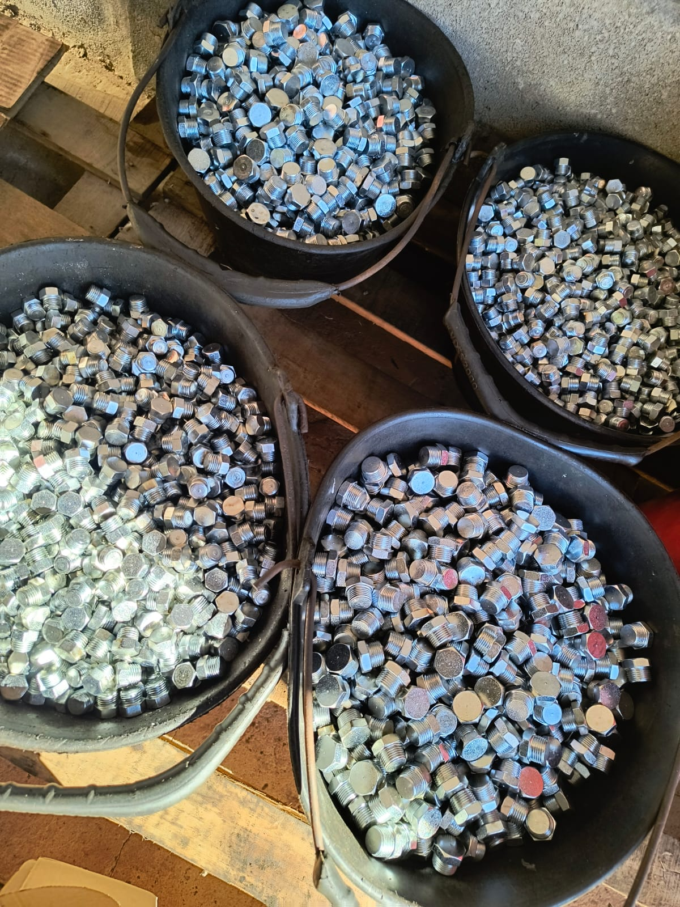
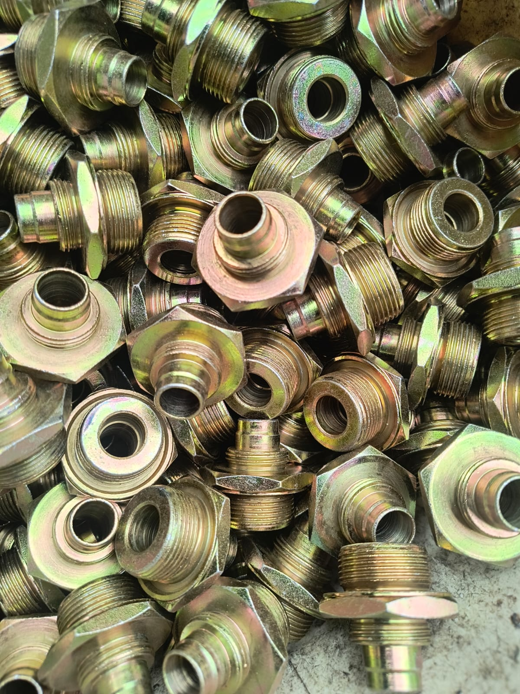
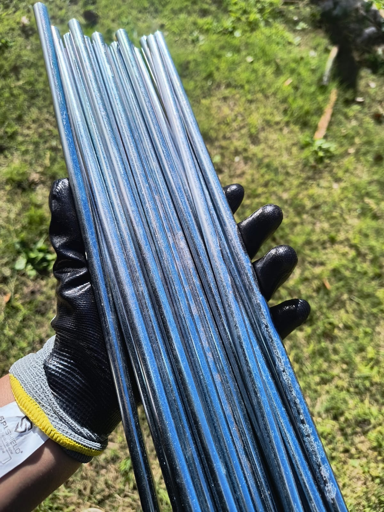

Piezas zincadas
Tratamiento de piezas metálicas para mejorar su protección frente a la corrosión.
Conocé algunos ejemplos de piezas y tratamientos realizados en Taller Wilde.

Tratamiento de piezas metálicas para mejorar su protección frente a la corrosión.

Tratamiento mediante tambor rotativo para piezas destinadas a producción seriada.

Procesos orientados a obtener una terminación uniforme y adecuada para cada pieza.
El tratamiento adecuado depende de las características de la pieza, su tamaño, cantidad y aplicación final.
Contactanos para contarnos qué piezas necesitás tratar y conocer las alternativas disponibles.
Solicitar presupuesto